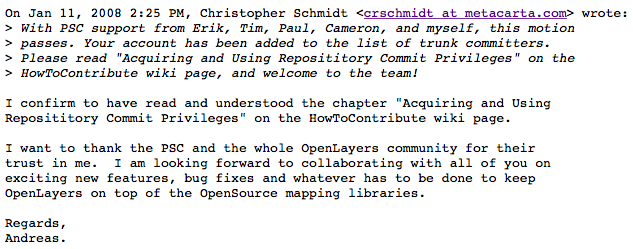

OpenLayers
Meet The Community
March 20th, 2015
History
Founded by MetaCarta
Meant as Open Source alternative to Google Maps
v2.0.0 - August 2006

v3 first attempt - Sept. 2010
FOSS4G code sprint, Barcelona
Marked the move from svn to git, but otherwise failed
v3 funding campaign - 2012
Main actors: camptocamp, swisstopo
Start: June 2012 code sprint, France
2012-2014 - the rough years
Unhealthy community
Losing more users to Leaflet
v3.0.0 finally out - August 2014
Community found back to its health
Good press and excitement
ahocevar @ openlayers
First major contribution: Dec. 2007
January 2008: Core committer
OpenLayers as a career helper
Thanks @tschaub!
September 2011: Steering committee
Governance Structure
OSGeo Umbrella
Project Steering Committee
Core Committers
Contributors
OSGeo Umbrella
OSGeo helps Open Source projects
Recognized brand
Education
Project Steering Committee
Administrative decision making
Other than that not very powerful
Currently 6 members
Bart and Andreas from Boundless
Core Committers
Power to review/accept/reject contributions
6 from Camptocamp
2 from Boundless
14 total
Contributors
More than 70
Only very few contributions from each
Communication
Users: tag 'openlayers' on Stackoverflow
Developers: ol3-dev Google group
IRC: openlayers on freenode (not very active)
Dev hangout Thurs 16:30Z http://bit.ly/ol-hangout
Getting involved
https://github.com/openlayers/ol3
Don't work around bugs - report or fix them!
Boundless employees covered by corporate CLA
BSD License
Why is Leaflet more popular than OL?
OL2 had the hype in 2007 (IE6 days!)
Leaflet was created as a product
OL3 was created as "Consultingware"
Submit conference talks, blog about projects!
Help improve the documentation!